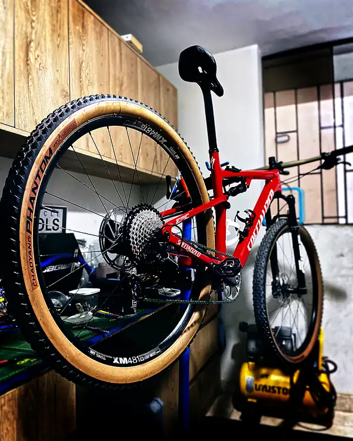

[ PROTOCOL 3.14 — FULL SYSTEM DYNAMICS ]MANUTENÇÃO DUPLA SUSPENSÃO EM TRUJILLO — DINÂMICA DE SISTEMA COMPLETO
A dupla suspensão opera em ciclos. Seus sistemas também se degradam em ciclos.
Uma bicicleta de dupla suspensão é um sistema dinâmico acoplado. A suspensão traseira oscila em função do terreno e do peso do ciclista. O sistema de articulação multiplica ou reduz as forças conforme sua razão. O amortecedor as dissipa.
O período de oscilação natural desse sistema massa-mola:
T = 2π × √(m / k)
Onde m é a massa suspensa e k é a rigidez de mola do amortecedor. Uma configuração correta de SAG (Static Sag) posiciona a bicicleta em seu ponto de trabalho projetado, onde a geometria de direção e a cinemática da suspensão estão otimizadas.
Uma manutenção deficiente ou ignorada desloca esse ponto. A bicicleta começa a trabalhar fora dos parâmetros sem que o ciclista perceba, até que algo falha ou o desempenho cai notoriamente.
Protocolo 3.14 — Escopo completo para dupla suspensão
- Desmontagem total da bicicleta: rodas, transmissão, freios, guidão, selim, suspensão
- Remoção do amortecedor traseiro para inspeção do exterior, molas e verificação do estado do retentor
- Limpeza profunda de todos os componentes com desengraxante técnico
- Lubrificação específica por componente: corrente, câmbios, freios (pontos móveis da manete e da pinça), cable routing interno se aplicável
- Inspeção de folga nos pivôs do sistema de articulação: pressão manual lateral no quadro traseiro com o amortecedor montado
- Lubrificação dos eixos de pivô acessíveis sem desmontagem dos rolamentos
- Calibração precisa da transmissão: câmbio dianteiro e traseiro, ajuste de tensão do cabo e limites
- Calibração dos freios hidráulicos: curso da manete, ponto de mordida, verificação de pad wear
- Ajuste de SAG dianteiro conforme o peso do ciclista (25–30% trail, 20–25% XC)
- Ajuste de SAG traseiro conforme o peso do ciclista e a geometria de projeto do quadro
- Verificação de pressão e rebote no garfo e no amortecedor
- Torque final certificado em todos os pontos de fixação: mesa, canote, eixo das rodas, freios e transmissão
- Verificação de alinhamento do disco e da mordida do freio após a montagem
Por que a dupla suspensão exige protocolo próprio
A razão π ≈ 3.14 aparece em cada roda, em cada pivô, em cada ciclo de compressão. Não é coincidência que o número que descreve todas as geometrias circulares do sistema seja o identificador do protocolo de manutenção do sistema completo.
Uma dupla suspensão corretamente mantida pode manter sua geometria de projeto durante anos. Uma mal mantida começa a desviar seus parâmetros em semanas.
Não é a mesma coisa uma manutenção geral de hardtail e uma de dupla suspensão. O sistema adicional acrescenta complexidade, mais pontos de ajuste e maior tempo de trabalho técnico.
BikeLab Studio — Manutenção de dupla suspensão em Trujillo
Calle Paraguay 300 – Urb. El Recreo – Trujillo
Segunda a sábado · 11:00 – 19:00
AGENDAR — MANUT. GERAL DUPLA SUSPENSÃOInvestimento_
Manutenção geral completa para bicicleta full suspension. Inclui desmontagem, limpeza, lubrificação, ajuste de SAG (dianteiro e traseiro), calibração de transmissão e freios e torque certificado. Sem custos ocultos.
Pagamento em sóis (PEN). Visa disponível com acréscimo de 5% por processamento bancário. Sem mínimos de cartão.
Perguntas Frequentes_
Qual é a diferença entre a manutenção geral de hardtail e a de dupla suspensão?
Na manutenção de dupla suspensão é adicionada a intervenção do amortecedor traseiro, ajuste de SAG traseiro, verificação de folga nos pivôs do sistema de articulação e calibração da geometria de pilotagem considerando o comportamento dinâmico da suspensão traseira. A complexidade é maior e o tempo de trabalho é proporcionalmente superior.
O SAG dianteiro e traseiro são ajustados neste serviço?
Sim. O ajuste de SAG é obrigatório em qualquer bicicleta de dupla suspensão. Para trail e enduro o SAG ideal fica entre 25% e 30% do curso total. O ajuste é feito em função do peso do ciclista equipado. Sem o SAG correto, a bicicleta não trabalha em sua faixa geométrica de projeto.
O serviço inclui os pivôs?
A manutenção geral inclui revisão de folga nos pivôs e lubrificação dos eixos de pivô acessíveis. Não inclui a extração e substituição completa dos rolamentos de pivô, que corresponde ao protocolo 6.35 de rolamentos premium (S/ 200). Se for detectada folga nos pivôs, isso é informado e o serviço adicional é orçado.
Com que frequência é recomendada a manutenção de uma dupla suspensão?
Para uso regular em trail com poeira, terra e umidade, recomendamos manutenção geral a cada 3 meses. Em uso mais controlado ou estrada, o ciclo pode se estender para 4 a 5 meses. A dupla suspensão acumula mais sujeira em seus sistemas internos do que um hardtail, o que acelera o desgaste se não houver intervenção a tempo.